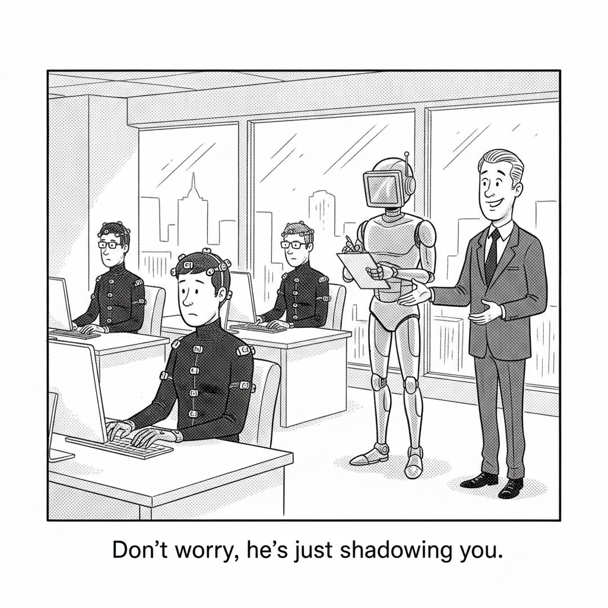

Your daily AI news digest
Anthropic is in early talks to acquire Decart for roughly $6 billion, a deal that would be by far its largest acquisition and one of the biggest exits ever for an Israeli technology company. The talks could still fall apart. Decart was founded in 2023 by Dean Leitersdorf and Moshe Shalev, who met in Unit 8200, and employs around 100 people.
What Decart sells is worth reading twice, because it explains the price. The company builds software that makes AI chips run more efficiently, cutting the cost of training and serving models, and reports say its team would join Anthropic's inference and performance organization. It also builds generative world models: Lucy, a real-time video transformation system, and Oasis, a simulated environment used to train robots and autonomous vehicles. Decart has raised about $450 million, including a $300 million round in May at a $4 billion valuation, up from $3.1 billion roughly eight months before that. Sequoia, Radical Ventures, and Nvidia are among its backers, and Nvidia had explored buying the company itself before those talks fell through.
Read the number against the rest of today's issue. Anthropic is reportedly preparing for an IPO, and the asset it is willing to pay $6 billion for is not a model or a product line. It is efficiency: more tokens out of the same scarce silicon. When compute is the binding constraint, the thing worth acquiring is whatever loosens it.

Humanoid robots need to watch humans work, and a data industry has grown up to supply the footage. In Los Angeles, the platform Sunain hands headbands with phone mounts to more than 1,400 contributors who film themselves making coffee, scrubbing toilets, and washing dishes. In Tamil Nadu, workers wear phones strapped to their heads, GoPros, smart glasses, depth-sensor cameras, and motion bands on wrists, hands, and legs for firms including Objectways and Bengaluru-based Humyn Labs. Pay runs about 250 rupees an hour, roughly $2; one studio worker films around 90 videos a day, four minutes each. The recordings become ground truth for Large Behavior Models that map human motion onto robot instructions. At the Lotte Hotel Seoul, staff wear body cameras while folding napkins for a motion library built by the South Korean startup RLWRLD. "Some jobs are supposed to be taken over, so humans can go and do better things," Objectways chief executive Ravi Shankar said. A worker named Sriramyachandra put the other side of it plainly: "Who else will give you 250 rupees an hour just for doing housework?"
Pangram is the detector at the center of the slop fight, and it has spent 2026 getting embedded in the places writing actually happens. In late July it raised $9 million led by Menlo Ventures and shipped Pangram 4 along with an image detector, claiming better than 99 percent accuracy, resistance to the "humanizer" tools built to launder machine text, and a false positive rate near one in ten thousand. Researchers at Maryland and Chicago have rated it among the most accurate available. A Chrome extension now labels text inline across X, LinkedIn, Substack, Medium, Reddit, and Google Docs. NewsGuard folded it into its plugin in March and has used it to identify more than 3,000 AI content farms. On July 21 Substack shipped detection powered by Pangram across posts, notes, and comments over 100 words, showing an estimated human, AI-assisted, and AI-generated split. Writers called it a witch hunt within the day. Accuracy at that scale is not the same thing as fairness at that scale, and one in ten thousand is a small number until it is your post.
Thrive Holdings raised $2 billion at a $12 billion valuation from SoftBank, D1 Capital, and Altimeter, the first outside money into a vehicle Thrive Capital launched in 2025. The model is private equity with a rewrite clause: buy control of unglamorous services businesses, then rebuild their workflows around AI. OpenAI took a stake in December 2025 and embedded its own employees with portfolio companies to speed adoption. The platform now spans more than 70 businesses across two pillars, Current in accounting with over 50 firms and 2,000 professionals, and Shield in IT services with about 20 companies. Thrive says its TaxAI system has processed more than 7,000 returns at 98 percent accuracy, cut preparation time roughly 30 percent, and improved help desk resolution 36-fold, with the number of custom agents deployed doubling in a single month. Part of the new capital funds a third vertical aimed at physical assets. "This applies across data centers, manufacturing, healthcare, power, water, transportation, and other physical infrastructure," founding member Anuj Mehndiratta said.
Jury selection began Wednesday in Oakland federal court in the suit brought by a bipartisan coalition of 29 state attorneys general against Meta, before Judge Yvonne Gonzalez Rogers, with Colorado, Kentucky, California, and New Jersey leading. The states allege Meta engineered Facebook and Instagram to be addictive to minors, misled the public about safety, and illegally collected children's data in violation of COPPA, which requires verifiable parental consent under 13. Opening statements are set for August 18 and the trial is expected to run about seven weeks. Mark Zuckerberg and Instagram head Adam Mosseri are both expected to testify. Meta has said potential damages could reach $1.4 trillion; the attorneys general have not said publicly what they will seek. It follows a $567 million judgment against Meta in New Mexico that also forced platform changes. "Meta knows its platforms are harming children and teens but continues to keep kids addicted," New Jersey Attorney General Jennifer Davenport said before trial.
Private credit has quietly become the main financing channel for the AI build-out, which means the exposure is now sitting where it is hardest to see. AI-related private credit loans passed $200 billion in early 2026, with roughly another $800 billion of data center financing expected to move through private credit and off-balance-sheet structures over the next two years, against about $570 billion of total AI-related debt issuance projected this year. Most of it is originated by a handful of managers, Blackstone, Blue Owl, Apollo, Pimco, BlackRock, through SPVs and direct lending to neoclouds and developers, then securitized outward to pension funds and asset managers holding rated tranches. There is a second AI risk in the same book that has nothing to do with data centers: Morgan Stanley puts direct lending exposure to enterprise software near 26 percent, in the sector investors most expect agentic AI to disrupt. Headline default rates read about 2.1 percent, but adjusted for liability management exercises and shadow distress the effective rate is closer to 5.4 percent, and roughly $51 billion of software debt rated B- or lower matures in 2028.
Each letter stands for another. Type a guess and it fills every match. Three letters are given.
— Alan Turing, 1950
About 756,000 accounts removed since the world-first ban took effect, 462,000 on Instagram and 294,000 on Facebook, up from 504,000 in January. More than eight in ten under-16s were reportedly still on social media in the ban's first three months, and the eSafety regulator is weighing an enforcement suit with penalties proposed up to A$99 million.
A White House trade report out today names more than 40 countries in China-linked transshipment routing. CBP's targeting system now runs machine learning over shipment histories, ownership records, and port X-ray imaging. Exiger estimates $75 billion of goods were illegally transshipped in the year to February 2026, costing $19 billion to $34 billion in lost duties.
India's Ministry of Power told Parliament that AI data centers will add 26.3 GW of demand by fiscal 2031-32, nearly double its earlier 13.56 GW estimate, with AI-specific capacity growing 24-fold from 275 MW to 6,546 MW. The Grid Controller of India has warned that spiky data center load and sharp ramps threaten stability.
The Hefei DRAM maker is worth roughly $524 billion against Tencent's $510 billion, less than three weeks after a STAR Market debut that raised $8.6 billion and closed up 466 percent. CXMT held 7.67 percent of the global DRAM market in 2025 against Samsung, SK hynix, and Micron, who hold about 90 percent between them.
Counterpoint puts YMTC at 14 percent of global NAND bits shipped in Q2, ahead of Kioxia and Micron, behind Samsung at 25 percent and SK hynix at 22 percent. Enterprise SSDs hit 48 percent of NAND bit volume, nearly double a year earlier. YMTC still ranks only fifth by revenue, because its output skews to consumer and low-priced OEM channels.
ASUS raised full-year server revenue growth guidance for the second time this year, to at least 150 percent, after Q2 revenue topped NT$200 billion for the first time and server sales grew nearly 200 percent. AI servers are about 90 percent of server revenue, with Nvidia NVL72 racks at 30 to 35 percent of the mix.
Delivered every weekday morning